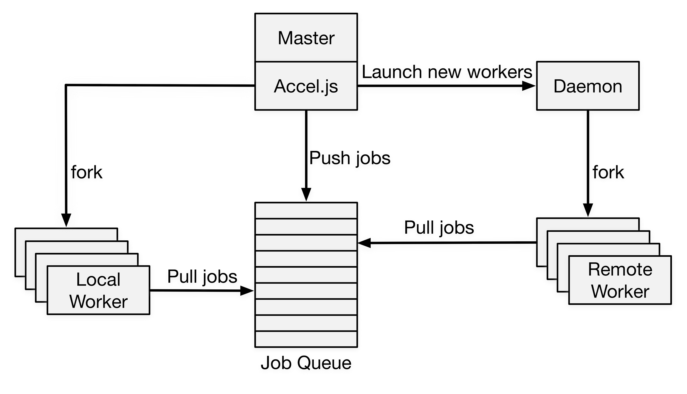
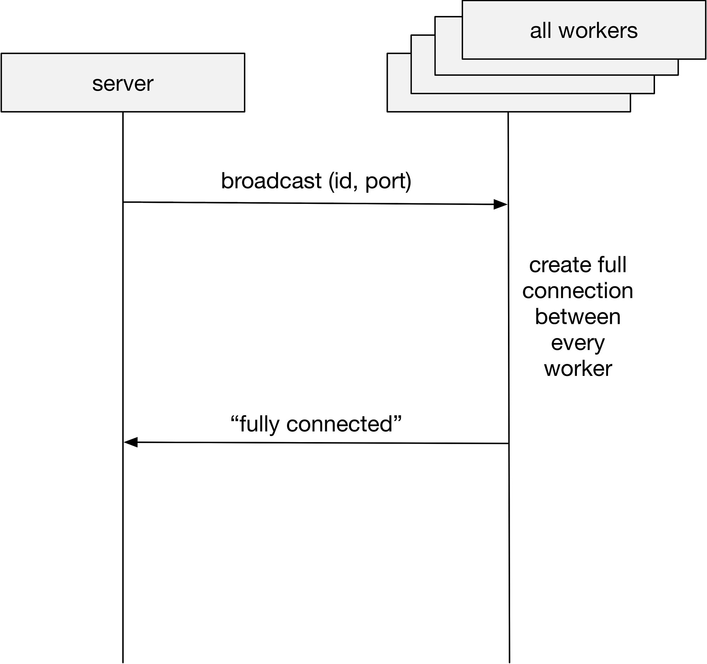

Leiyu Zhao(leiyuz), Hailiang Xu(hailianx)
Accelerating your Node.js program by parallelizing computation with multi-cores and multi-nodes.
According to the Stackoverflow 2016 developer survey[1], javascript is the most popular technology in computer science. However, due to the native features of javascript, it's not a resident in the parallel programming world! Javascript adopts event-based, non-preemptive model running on a single thread. There is a main event loop that waits for events and calls the corresponding event handlers. Although the event handlers are independent control flows, they run on a single thread in a non-preemptive way, which means the functions won't give out the control unless it returns. Therefore, a CPU intensive job will block all other events. This is the motivation of Accel.js.
As mentioned in the background, Node.js exposes no thread-like interfaces to developer, so the only way to utilize multiple cores are multi-process. Since they cannot share the same address space, communications among different processes are harder and may require higher overheads. How to achieve good speedup considering the overheads is a great challenge. And we need to compress the overhead as much as possible.
Unlike Python, ECMAScript (Javascript) does not support many grammar tricks (e.g. function decorator and operator overloading). Therefore, it is hard to implement intuitive and graceful API to parallelize computing. A counter-example is the builtin package for Node.js, cluster, which makes parallel computing almost no easier than do it from scratch.
Since our goal is to make life easier, it is very essential to address the challenge.
Instead of implementing customized JIT interpreter, we implement Accel.js APIs as a library, which is released on NPM. The detailed implementation (components protocols & APIs) is as follows:

This is the overall architecture of our library. As in this graph, the master will launch workers in local CPU cores. It can also contact remote daemon to create remote workers. Each working is mapping to a CPU core. During the execution of master, it can push CPU intensive jobs to a centralized job queue. The workers will offload the computation from master to prevent long-time blocking.
The 2-Phase Connect Protocol(2PC) is used to create communication channels between master and workers as well as workers and workers (full connection). Each communication channel is implemented in a TCP socket. In fact, local workers can use native pipe instead of socket. However, we conducted several experiments. And the results show that there is abnormal long latency. We don’t really know the implementation of Node.js. But similar issue is in online community as well. As a result, we adopt socket for local worker as well as remote worker. The code can be reused as well.
The master will connect to every worker in this node and maintain a list of (id, port) pair. This data structure will be broadcasted in phase 2 to create full connection between workers. Note here the connect process is slightly different for remote worker. The master will first contact remote daemon. Remote daemon is responsible to launch remote workers.

After phase 1, the master knows the listening port for every worker. It will broadcast it to every worker. The worker will initialize connection to every other worker. After the full connection created, every worker will reply with a “fully connected” message. When master receives all ACK, 2PC ends.
How do workers get task? There is a centralized job queue. During the execution, the master will push CPU intensive jobs. Workers will pull tasks from the job queue. After execution, it will return the results and start a new round. We optimized the process by merging report of the last round and pull in the new round messages into one single message to reduce overhead.
CMsg (stands for Customized Message) is implemented for communication between extended distributed data structure (e.g. Channel, incoming RDD, etc.). It is built on communication socket and for each node, there’s a CMsgRouter for sending, receiving and routing CMsg.
Extended distributed data structure registers itself on CMsgRouter on creation, and then it will be able to receive CMsg from its peers in other workers (or master).
This design fully decouples data structures from the communication layer, making it extremely easy for future extension.
Refer to Accel.js Documentation for detailed API
acceljsThe binary installed by npm to launch your application in replace of Nodejs (e.g. npm yourApp.js). You can specify the number of local workers as well as remote workers (you need to specify the endpoint of daemon for remote workers) that run the app. For more detail check out acceljs --help.
accel-daemonThe binary installed by npm to launch a remote daemon at one machine on some endpoint. Check out accel-deamon --help for more details.
Synchronization scope is the center of all magic. In your code which is executed remotely, all the local variables are not accessible (of course!) and you can use synchronization scope to make them available transparently.
var $=accel(); will create a new synchronization scope. It is recommended to use separate scope for every .js file to achieve scope isolations. When functions in some scope are executed remotely, the scope will be synchronized automatically to broadcast the variables. It’s noteworthy that the scope is synchronized incrementally, which means that it will not require any more traffic once it is transferred.
The broadcast scope is nothing more than a js-object, just read/write values by $.someKey=someValue or $["someKey"]=someValue.
The scope can also be used as a function, in order to register worker-functions:
$(someFunction, [mode])someFunction: a function that will be executed remotely. If the function has name, it can be called later by accessing the synchronization scope ($.funcName(...)); if the function is anonymous, it can only be called at once ($(function(){xxx})(...)).mode (optional): define the mode of the function, default is "sync"For synchronous function, pass all the parameters as normal, plus a trailing function as callback:
function someFunction(arg1, arg2) {}
$(someFunction);
$.someFunction(arg1, arg2, (res) => {
// now the function has completed
});
For asynchronous function, call the function as it is.
function someAsyncFunc(arg1, arg2, callback) {}
$(someAsyncFunc, "async");
$.someAsyncFunc(arg1, arg2, (params) => {
// now the function has completed
});
Besides, all the remote functions can be decorated before called:
$.someFunction(arg1, arg2, (res) => { }); // normal invocation
$.someFunction.urgent()(arg1, arg2, (res) => { }); // urgent invocation, the task will be scheduled first
$.someFunction.to(2)(arg1, arg2, (res) => { }); // targeted invocation, the task will be assigned to node 2
$.someFunction.toAll()(arg1, arg2, (res) => { }); // cohert invocation, each node will execute this task exactly once
In most cases, it is required to import some packages outside in worker functions. This is achieved by introducing homogeneous dependency:
$.os=accel.require("os");
$.localPackage=accel.require("./localPackage");
$.os.platform(); // you can invoke it locally
$(function() {
return $.os.platform(); // or invoke it remotely
})((res) => {
// do something
});
Accel.js also has wonderful support for MPI jobs. After launched, the workers talk to each other by channel.
Broadcast Channel is a Golang style multi-consumer-multi-producer channel that is accessible by all the workers as well as master. Everyone can act as a producer and a consumer, i.e., send to the channel or receive from the channel. The receiving function will not callback before anything is received, while the sending function will not callback when the buffer is full.
Use the simple API to create a broadcast channel:
$.c=new accel.Channel([bufferSize]);
Where the parameter is the size of channel, which by default is 0.
Unicast Channel has the same API as broadcast channel (see below), but only support the communication between two which are specified in creation. Since unicast channel utilize direct IPC between workers instead of being controlled by master, it has lower latency.
Use similar API to create a unicast channel:
$.c=new accel.Channel(participant1, participant2[, bufferSize]);
In which participant is the number of workers, or -1 for master.
All the evaluations are performed on Amazon EC2 c4.xlarge, which has 4 vCPUs and 7.5GB of memory.
We render large Mandelbrot graph (26000x6000) using either serial Node.js or divide the graph horizontally into subtasks and dispensing the subtasks to different cores using either Accel.js or Parallel.js. For each task, we glean the time spent on computation as well as framework itself (communication, framework code, etc.) and the result is as follows:


Google Font Subsetting Service receives a URL from requesters -> crawls the URL -> reads some large font file (10s of MB) from disks -> setups index in the memory -> subsets the font -> output the font to the disks -> serve the static file to requester. One part of the requesting is disk I/O bounded and the other is CPU bounded. We run the web server on single machines using original Node.js, Parallel.js and Accel.js to measure the throughput and response time:

We also introduces some possibility to issue Cache Hit Request, which requests generated subsetted fonts and is served just a static file. The response time of Cache Hit Request is as follows:
Equal work was performed by both project members.